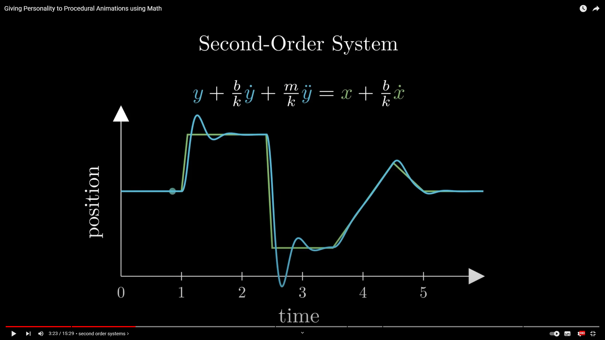
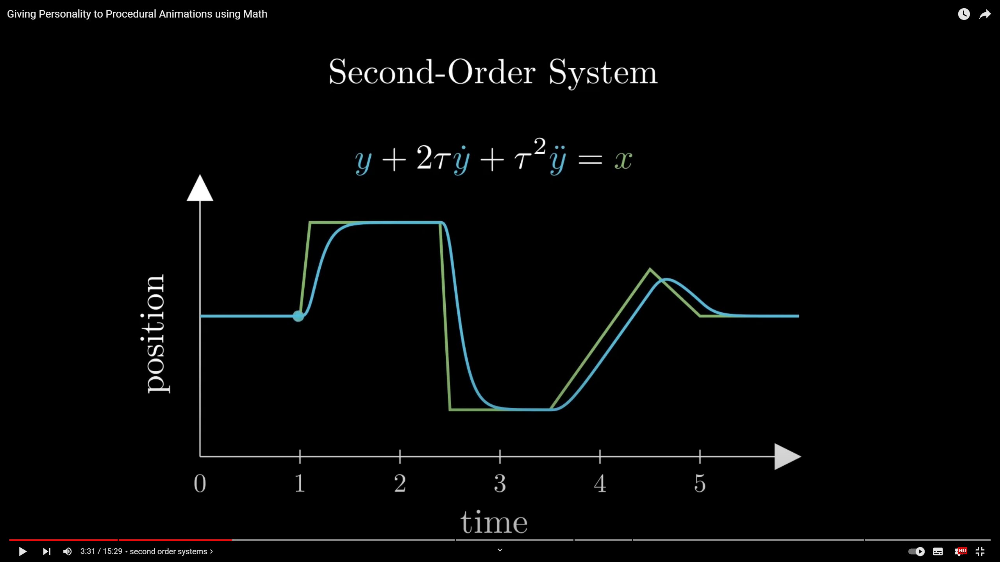
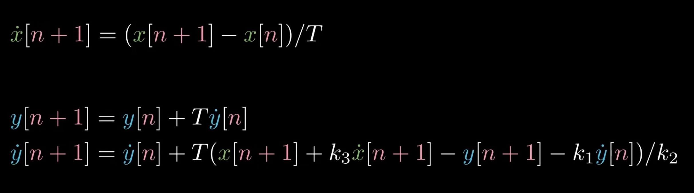
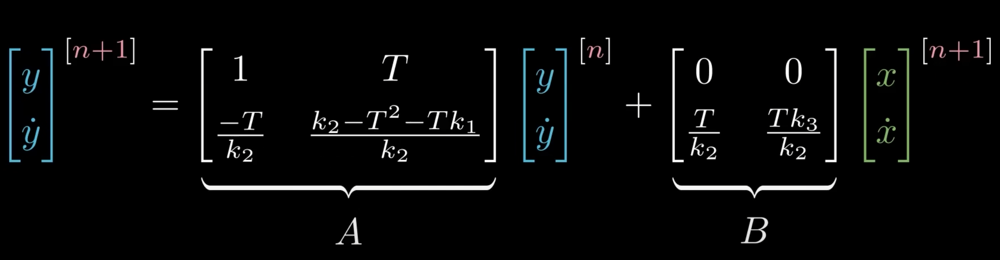

03二阶运动系统
二阶运动系统(Second-Order System)
youtube视频 https://www.youtube.com/watch?v=KPoeNZZ6H4s
视频里讲解的最重要就是二阶系统(Second-Order System)，该运动在视频中主要用来实现了跟随移动效果。但也可以用来实现其他功能。
为方便讲解，视频中使用了两个变量。实际上可以认为是一个点是随时间确定变化，另一个点通过一个函数关系跟关联来更新自己的运动状态。只不过从视频可以看出，这是一个多阶段求算递归的过程。
先在假设一个点变化如，那么另一个点的运动可以通过如下的方式与其关联
其中每一项可以这么理解来源
- 是跟随点的速度变化率
- 是跟随点的加速度变化率
- 是目标点的速度变化率，可认为来自于阻力
值得注意的是，绝大多数运动状态都可以通过该公式参数表示出来。因为这个就是一个关联运动方程求解。
例如刚体被一个阻尼弹簧拖曳的图像：
例如一个有缓慢阻尼运动的图像：
但是对于这里面三个系数是不太直观的。对此要做一个转化让其变成易于我们理解的形式，结果如下：
在这个新的参数方程中三个新的参数有新的语义来衡量整个曲线运动。
- 象征着系统的频率，可以用hz来度量。其描述了整个系统相应输入点变化的速度。其数值越大，响应越快，越迅速跟谁目标点变化。
- 称之为阻尼系数(damping coefficient)。其描述了整个系统怎么趋于最后的稳定状态。
- 当。振荡不会停止，会变成一个无阻尼简谐振子。
- 当,系统会伴随一定振动后趋于稳定。
- 当,整个系统不会振动，会缓慢跟随上目标点，不会超越。unity使用1
- 当有一定振动是，的频率含义会更明显，其同时影响着振动的快慢。数值越大，振动越快，峰间距约小。
- 刻画了整个系统相对于运动的初始响应效果(inital response)。
- 当启动需要一点加速时间，
- 当初始加速效果会加快。
- 当初始的加速效果会超过目标，然后再返回来。(overshoot)
- 当系统初始会与目标运动方向相反。
实际上这个应该就是用简谐振子的圆周运动带入去求解了常微分方程组。但是简谐运动的特征很好的描述了这个运动系统的过程。实际上，这样一个方程就会导出这样一个结构。
现在来看实时求解该运动的方法。常用的方法有：
- Euler method
- Semi-implicit Euler Method
- Verlet Integration
这些都是用来求解微分积分的方法。这里作者使用了Semi-implicit Euler Method，恰巧有跟Verlet Integration一样的精度。
需要预测目标点的位移和速度。假如初始静止应该有如下结构
在此后游戏运行的每一帧中我们持续更新这些相关变量：
下一步就是通过上面的微分方程组将替换得来，注意的是这里替换是可以使用目标点的当前位置和速度，以及跟随点的当前位置即
最后即得到如下得一个更新公式
这个计算公式视频中有实现，实现后可以看到已经有了对应效果。但是这个方法还有问题，存在着不稳定得风险，而这个来自于时间间隔的扩大。
其原因是因为可以发现上面公式中对每一步更新都会影响下一步更新，即每一步结果还会回来影响其原因(feedback system)。例如过大最直接会影响然后进入放大下一步中的计算。不停使得误差放大。
为了解决这个问题，就要用一些更系统的方法。想方法将公式写成与的关系。这可以通过代换第一个公式到第二个公式中并整理方程组得到。
经过整理之后可以得到如下的一个方程
可以看到这实际上可以用矩阵来表示。
这个也被人熟知为状态空间表示(state-space representation)，其中
- A表示了上一帧的如何影响到下一帧的。
- B表示了部分如何作用到上面。
这样一个系统也被称之为线性物理系统(linear physical systems)
我们的关注点在A上。实际上这里A承担一个转换转换作用。如果是1维，那A是一个常数，我们可以简单知道A的的大小影响着是否收敛。而这里A是一个矩阵，所以我们要让其行本征值小于1，这样向量变化的模长就不会被放大。计算得到有
当时间长度超过这个值的时候，可以让计算多运行几步。视频作者也用了别的方式来减少误差，例如反向计算的方式，而且这样计算还可以有助于抵消抖动。
关于该系统有一篇很好的描述文章。 https://lpsa.swarthmore.edu/
实际上这里的线性运动系统再Eirc Lengyel的《3D游戏与计算机图形雪中的数学方法也有介绍》(Mathematics for 3D Game Programming and Computer Graphics)。属于线性物理部分。
看到该视频后，让我想到了数学物理分支。因为方程本质就是一个微分方程组。同时这个状态空间表示属于控制理论范围内结构。控制理论对于运动学上的影响。
目前看到关联的三个分支
- 动力系统：关联最紧密。刻画了固定规则下，目标点在中随时间的演化情况。
- 控制理论：也有系统分析部分，不过更多是稳定性，输入对最后结果的影响。
- 数学物理：建模部分，有明确的二阶物理描述。